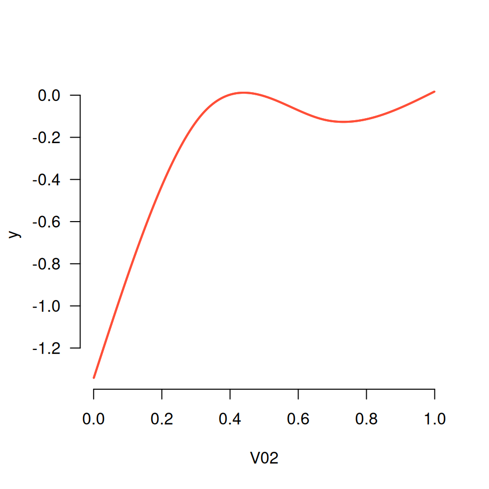

Performs a basis expansion for many features at once, returning output that is compatible
for use with the grpreg() function. Returns an expanded matrix along with a vector
that describes its grouping.
Usage
expand_spline(x, df = 3, degree = 3, type = c("ns", "bs"))Arguments
- x
Features to be expanded (numeric matrix).
- df
Degrees of freedom (numeric; default = 3).
- degree
Degree of the piecewise polynomial (integer; default = 3 (cubic splines)).
- type
Type of spline, either B-spline (
"bs") or natural cubic spline ("ns"; default).
Value
An object of class expandedMatrix consisting of:
X: A matrix of dimensionnrow(x)bydf*ncol(x)group: A vector of lengthdf*ncol(x)that describes the grouping structureAdditional metadata on the splines, such as knot locations, required in order to evaluate spline at new feature values (e.g., for prediction)
Details
expand_spline() uses the function splines::bs() or splines::ns() to generate a basis
matrix for each column of x. These matrices represent the spline basis for piecewise
polynomials with specified degree evaluated separately for each original column of x.
These matrices are then column-bound to form a single grouped matrix of derived features. A vector
that describes the grouping present in the resulting matrix is also generated. The resulting
object can be passed to grpreg().
This methodology was originally proposed by Ravikumar et al. (2009), who named it SPAM (SParse Additive Modeling).
References
Ravikumar P, Lafferty J, Liu H and Wasserman L (2009). Sparse additive models. Journal of the Royal Statistical Society Series B, 71: 1009-1030.
See also
plot_spline() to visualize the resulting nonlinear fits
Examples
set.seed(1)
Data <- gen_nonlinear_data(n=1000)
X <- expand_spline(Data$X)
fit <- grpreg(X, Data$y)
plot_spline(fit, "V02", lambda = 0.03)
